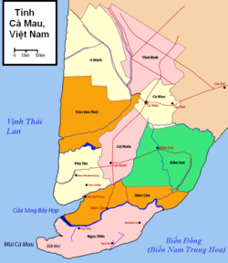

Cà Mau là một tỉnh ven biển ở cực nam của Việt Nam, nằm trong khu vực Đồng bằng sông Cửu Long, Việt Nam.
Cà Mau là một vùng đất trẻ, mới được khai phá khoảng trên 300 năm. Vùng đất Cà Mau ngày xưa được Mạc Cửu dẫn người Hoa đến khai phá.
Sau khi Mạc Cửu dâng toàn đất này thần phục Nhà Nguyễn, Mạc Thiên Tứ con của Mạc Cửu đã vâng lệnh triều
đình Chúa Nguyễn lập ra đạo Long Xuyên.
Qua nhiều lần thay đổi về hành chính, đến ngày 1 tháng 1 năm 1997, tỉnh Cà Mau được tái lập theo Nghị quyết của Quốc hội khóa IX, kỳ họp thứ 10. Ngày 6 tháng 11 năm 1996 về việc điều chỉnh địa
giới hành chính, chia tách tỉnh Minh Hải thành tỉnh Cà Mau và tỉnh Bạc Liêu.
-
Nguồn gốc tên gọi
-
Vị trí địa lý
- Phía Đông giáp với Biển Đông
- Phía Tây và phía Nam giáp với vịnh Thái Lan
- Phía Bắc giáp với các tỉnh Bạc Liêu, Kiên Giang
- Điều kiện tự nhiên
- Hành Chính
Tên gọi Cà Mau (chính tả cũ: Cà-mau) được hình thành do người Khmer gọi tên vùng đất này là "Tưk Kha-mau" (tiếng Khmer: តឹកខ្មៅ), có nghĩa là nước đen.
Do Nước đen là màu nước đặc trưng do lá tràm của thảm rừng tràm U Minh bạt ngàn
rụng xuống làm đổi màu nước.
Cà Mau là xứ đầm lầy ngập nước, có nhiều bụi lác mọc tự nhiên và hoang dã. Chính vì lẽ đó từ thuở xưa đã có câu ca dao:
| “ |
Cà Mau là xứ quê mùa Muỗi bằng gà mái, cọp tùa bằng trâu |
” |
| — Ca dao Việt Nam | ||
Phần lãnh thổ đất liền của tỉnh Cà Mau nằm trong tọa độ từ 8o30' - 9o10' vĩ Bắc và 104o80' - 105o5' kinh Đông.
|
Điểm cực Đông tại 105o24' kinh Đông thuộc xã Tân Thuận, huyện Đầm Dơi. Điểm cực Nam tại 8o33’ vĩ Bắc thuộc xã Viên An, huyện Ngọc Hiển. Điểm cực Tây tại 104o43' kinh Đông thuộc xã Đất Mũi, huyện Ngọc Hiển. Điểm cực Bắc tại 9o33' vĩ Bắc thuộc xã Biển Bạch, huyện Thới Bình. Tỉnh Cà Mau là mảnh đất tận cùng của tổ quốc với 3 mặt tiếp giáp với biển: |
 |
|---|
Cà Mau là vùng đất thấp, thường xuyên bị ngập nước. Cà Mau có 5 nhóm đất chính gồm: đất phèn, đất than bùn, đất bãi bồi, đất mặn và đất kênh rạch.
Rừng Cà Mau là loại hình sinh thái đặc thù, rừng sinh thái ven biển ngập mặn được phân bố dọc ven biển với chiều dài 254 km.
Bên cạnh đó, Cà Mau còn có hệ sinh thái rừng tràm nằm sâu trong lục địa ở các huyện U Minh, Trần Văn Thời,
Thới Bình quy mô 35.000 ha. Diện tích rừng ngập mặn ở Cà Mau chiếm 77% rừng ngập mặn của vùng đồng bằng sông Cửu Long.
Tỉnh Cà Mau mang đặc trưng của khí hậu nhiệt đới gió mùa cận xích đạo, với nền nhiệt độ cao vào loại trung bình trong tất cả các tỉnh Đồng bằng sông Cửu Long.
Khí hậu Cà Mau được chia thành 2 mùa là mùa mưa và mùa khô. Trong đó, mùa
mưa từ tháng 5 đến tháng 11, mùa khô từ tháng 12 đến tháng 4 năm sau.
Lượng mưa ở Cà Mau trung bình có 165 ngày mưa/năm, với 2.360 mm. Độ ẩm trung bình năm là 85,6%, nhiệt độ trung bình hàng năm là 26,50C. Trong đó, nhiệt độ trung
bình cao nhất trong năm là vào tháng 4, khoảng 27,60C, nhiệt độ trung bình thấp nhất vào tháng 1, khoảng 250C. Biển nhiệt độ trung bình trong 1 năm là 2,70C.
Năm 2014, nhiệt độ thấp nhất ở đây đã xuống tới 20 độ C (tháng 1) (trước
đó vào tháng 12 năm 2013 đã xuống còn 18 độ C). Nhiệt độ cao nhất là 38 độ C khi đang trong mùa khô vào tháng 4 năm 2016.
Tỉnh Cà Mau có 9 đơn vị hành chính cấp huyện, bao gồm 1 thành phố và 8 huyện. Được phân chia thành 101 đơn vị hành chính cấp xã gồm có 9 thị trấn, 10 phường và 82 xã.
| Ðơn vị hành chính cấp Huyện | Thành phố Cà mau |
Huyện Cái Nước |
Huyện Đầm Dơi |
Huyện Năm Căn |
Huyện Ngọc Hiền |
Huyện Phú Tân |
Huyện Thới Bình |
Huyện Trần Văn Thời |
Huyện U Minh |
| Diện tích (km²) | 249,29 | 417 | 823,2 | 495,4 | 735,18 | 461,87 | 637,05 | 702,72 | 774,14 |
|---|---|---|---|---|---|---|---|---|---|
| Dân số (người) | 224.414 | 139.120 | 187.000 | 75.230 | 85.140 | 107.000 | 137.600 | 190.420 | 104.800 |
| Mật độ dân số (người/km²) | 900 | 334 | 227 | 152 | 116 | 232 | 216 | 271 | 135 |
| Số đơn vị hành chính | 10 phường, 7 xã | 1 thị trấn, 10 xã | 1 thị trấn, 15 xã | 1 thị trấn, 7 xã | 1 thị trấn, 6 xã | 1 thị trấn, 8 xã | 1 thị trấn, 11 xã | 2 thị trấn, 11 xã | 1 thị trấn, 7 xã |
| Năm thành lập | 1999 | 1957 | 1956 | 2003 | 1984 | 2003 | 1956 | 1951 | 1978 | Nguồn: Niên giám thống kê tỉnh Cà Mau năm 2017 |